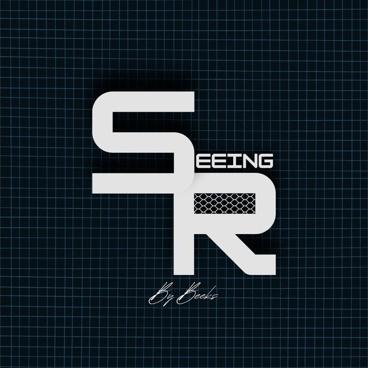

Break down every point.
Slow it down, draw on it, explain it, and export your analysis in seconds.
· Nothing is uploaded ·
This phone struggled to record in 1080p (the video had to be reloaded or the recording paused for a few seconds). For long analyses on this phone, 720p is safer.
Very long videos: use “Save to Files”, then in the Files app open the video and choose Share → Save Video to put it in Photos.
Bookmarks
Settings